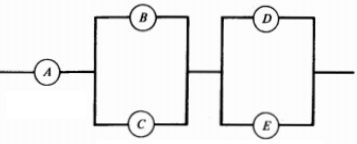

La regla de la adición establece que la probabilidad de ocurrencia de cualquier evento en particular es igual a la suma de las probabilidades individuales, siempre y cuando estos eventos sean mutuamente excluyentes, es decir que ambos no pueden ocurrir al mismo tiempo, de modo que se puede aplicar la siguiente fórmula
La regla de la adición establece que la probabilidad de ocurrencia de cualquier evento en particular es igual a la suma de las probabilidades individuales, en caso de que los eventos NO sean mutuamente excluyentes se aplicará la siguiente fórmula
La regla de la multiplicación establece que la probabilidad de ocurrencia de dos o más eventos estadísticamente independientes es igual al producto de sus probabilidades individuales de modo que
Se espera que para el próximo mes se lleve a cabo uno de los conciertos más grandes del país, que tendrá como invitado principal a Ed Sheeran cantante y compositor Británico. Una de sus fans desea asistir al concierto, para eso ha intentado conseguir un trabajo de medio tiempo y tiene la esperanza de conseguirlo en dos empresas especificas: Edidas y Nile. Ella estima que su probabilidad de lograr una oferta de empleo en la empresa Edidas es de un % y que la probabilidad de obtenerla en la empresa Nile es de un %. Por otro lado, ella considera que la probabilidad de recibir ofertas de ambas empresas es del %.
Si la probabilidad de lograr una oferta de empleo en Edidas (A) es del %, en nile (B) es de % y de obtener una oferta en ambas es de %(C), las probabilidades seran:
Esto significa que la persona tiene una probabilidad del % de obtener el trabajo y poder asistir al concierto, tan solo tendrá que correr un riesgo del % de no poder asistir al evento.
El parque de diversiones Salitre Mágico, realiza todos los meses de Octubre un evento llamado el Festival del Terror para el cual es necesario tener un pasaporte NITRO, JUNIOR ó SUPERKIT DE LA DIVERSIÓN.
Si la probabilidad de comprar un pasaporte NITRO (C) es del %, un pasaporte JUNIOR (J) es del % y un pasaporte SUPERKIT DE LA DIVERSIÓN (D) es del %, entonces usando la regla aditiva la probabilidad será:
El estudiante en su análisis concluye que el % e los visitantes comprarán un pasaporte que les permita entrar al Festival del Terror. De modo que si entran 1000 personas al parque tan solo tendrán acceso al Festival del Terror, por lo que el estudiante decide si adquirir el pasaporte y participar del festival.
La profesora de artes de la Universidad Distrital Francisco José de Caldas de la facultad de ingeniera
encargó proyecto final a sus alumnos realizar una pintura con los materiales que tengan
a la mano, esta pintura debe tener una característica de arte contemporáneo.
Para rellenar cada lienzo se necesitan
± miligramos.
En este trabajo, se sabe que la mínima cantidad para rellenar el lienzo tiene la misma probabilidad de no terminarse que un lienzo totalmente finalizado. Es decir, la probabilidad de que aleatoriamente se obtenga un lienzo totalmente finalizado de miligramos es igual a la probabilidad de obtenerlo con la mínima cantidad de rellenar el lienzo con miligramos.
Se sabe que la probabilidad de que el proyecto cumpla con las especificaciones es del
%.
Si sabemos que B es el evento que cumple con las específicaciones, S y L los casos que sea muy grande o pequeño, entonces:
a. P(M) =
P(S) = P(L)=(100- )/2 = %.
Respuesta: Con base en esto se puede inferir que de cada 1000 lienzos seran muy largos
b.
Ahora, si tenemos que X es el relleno de un lienzo seleccionado aleatoriamente, entonces obtenemos:
Una persona en promedio tiende a comprar por Mercadolibre varios productos en línea en cantidades de 4,5,6,7,8, 9 productos o más en todo el mes. Dada la probabilidad de compra para cada cantidad de productos mencionada anteriormente así: , , , , y respectivamente
Si C es el suceso de que al menos realice la compra de al menos 5 productos.
Sea C el suceso de realizar la compra de al menos 5 productos.
Entonces P(C’) = 100 - P(C) donde P(C) es la probabilidad de obtener la compra de al menos 5 productos y P(C’) la probabilidad de obtener la compra de más de 5 productos al mes, entonces
Las probabilidades de una persona que compra un smartphone nuevo de un color determinado son: dorado %, negro %, rojo % y blanco %.
Sean D,N,R y B los eventos de que la persona compre respectivamente un smartphone dorado, negro, rojo y blanco respectivamente. Además conociendo que estos cuatro eventos son mutuamente excluyentes, la probabilidad pedida es:
En un aula de clases de la universidad , se escoge a un estudiante aleatoriamente , luego de hacer la respectiva encuesta de muestreo se obtienen las siguientes probabilidades: %, % y %, que corresponden a las probabilidades de que un estudiante tenga un celular tipo smartphone de marca Ximson, Somsong, o ambas marcas de celulares respectivamente.
Se deberán establecer los eventos del problema:
Evento A: Estudiante con Smartphone Xiaomi
Evento B: Estudiante con Smartphone Samsung
Teniendo en cuenta la regla de la adición se obtiene que:
Aplicando la regla aditiva a nuestro problema :
P (A U B) = % + % - %
Asi que:
P (A U B)
= %
+ %
- %
= %
La probabilidad de que un estudiante posea cualquier marca o en su defecto las dos es de %.
Un estudiante en cierta universidad ve 7 materias en el semestre, de las cuales tiene 2 en riesgo de pérdida, la materia 1 ( Cálculo) representa un % de riesgo de pérdida y la materia 2 (Álgebra) le representa un % de riesgo de pérdida. El riesgo de perder las dos materias es de %
Tenemos que:
P(AUB) = P(A)+P(B)-P(A∩B)
= + -
=
Luego el estudiante tiene una probabilidad de de pasar alguna materia de las que va perdiendo.:
Se realiza una encuesta a 210 personas en el centro de Bogotá sobre su posición política . Cada votante se identifica como de derecha ,izquierda, o ninguno, y después se le pregunta “ ¿está a favor o en contra de la actual reforma tributaria?”. Teniendo como resultado la siguiente tabla:
¿Cuál es la probabilidad que el votante esté a favor o sea de izquierda ?
Tenemos los dos eventos: “el votante seleccionado está a favor” , “el votante es de izquierda” y " el votante es de izquierda o esta a favor", " el votante es de izquierda y esta a favor".
Encuentra las cuatro probabilidades:
Sea el evento A="a favor" y el evento B="Izquierda"
Por la regla general se tiene que:
P (a favor o izquierda) =P (a favor) +P (izquierda) –P (a favor e izquierda)
Teniendo en cuenta los valores encontrados anteriormente:
P (a favor o republicano) = 83.8%.
P (a favor) + P (izquierda) – P (a favor e izquierda)= 58.57% + 43.3% – 16.6 %= 85.27%
Un alumno de la facultad de ingeniería tiene las siguientes probabilidades de aprobar sus materias:
Matemáticas
%,
Física
%. Si la probabilidad
de que apruebe ambas materias es de
%, ¿Cuál es la probabilidad de que el alumno apruebe al
menos una de las materias?
¿Cuál es la probabilidad de que el alumno apruebe al menos una de las materias?
Sea A el evento “aprobar Matemáticas” y B el evento “aprobar Física”, entonces por la regla de adición para eventos sin exclusión mutua, es decir pueden ocurrir simultáneamente, se tiene que:
Después de la salida de uber de colombia quedaron dos plataformas principales didi y indriver, la probabilidad de que un conductor obtenga un viaje en didi en menos de 15 minutos es de % , mientras que la probabilidad de que esto pase en indriver, es del %
Si A es la probabilidad de obtener un viaje en didi y B la probabilidad de obtener un viaje en indriver, Entonces:
La probabilidad de que un conductor obtenga un viaje en ambas plataformas es de % es decir que de cada 1000 conductores tan solo de ellos obtendrán un viaje en ambas plataformas
Durante 3 meses la universidad distrital estuvo en paro pues se exigía la aprobación de la asamblea universitaria. El paro se levantará solo si se aprobaba la asamblea universitaria, y si se aprueban las garantias academicas del paro anterior o bien se adoptaran unas nuevas, la probabilidad de que la asamblea sea aprobada es de % , la probabilidad de que se aprueben las garantías del paro anterior o que se aprueben las garantias nuevas es del % , la probabilidad de que se aprueben nuevas garantías académicas es de %.
Se sabe que la probabilidad de que se apruebe la asamblea es del % (A)
Se sabe que la probabilidad de que se adopten garantías pasadas o las garantias nuevas es del % (B)
Se sabe que la probabilidad de que aprueben nuevas garantías es del % (C)
Ya que la probabilidad de que la universidad salga del paro es del %, se podría inferir que semestralmente la probabilidad de tener anormalidad académica es del % ( de cada 10 semestres se realizará un paro)
En una clase de probabilidad hay 6 grupos conformados por 4 personas y dos conformados por y personas respectivamente los cuales poseen los temas más difíciles de la clase, de las personas de la clase :
Se sabe que la probabilidad de ser asignado al grupo dificil 1 es de (/) = (A)
Se sabe que la probabilidad de ser asignado al grupo difícil 2 es de (/) = (B)
Por lo tanto la probabilidad de ser asignado a alguno de los dos sera:
Interpretando este resultado se tiene una probabilidad de tan sólo % de ser asignado a uno de los grupos difíciles, de que una persona podría estar tranquila si no desea uno de estos grupos
Un sistema eléctrico está constituido por 5 componentes que se encuentran conectados entre sí como se muestra en la figura, donde las probabilidades indican la seguridad de que el componente funcione correctamente. Si se supone que el funcionamiento de un componente en particular es independiente de los demás,

Inserte P(A) : %
Inserte P(B): %
Inserte P(C) : %
Inserte P(D): %
Inserte P(E) : %
Establecida la suposición de independencia por el mismo problema, vemos que el sistema eléctrico puede trabajar si los componentes A, B y/o C, y D y/o E lo hacen. Luego la probabilidad de que el sistema trabaje podemos expresarla como:
Las probabilidades de las uniones las podemos calcular así:
P(¬B)*P(¬C) es la probabilidad de que no trabaje el componente B y tampoco lo haga el componente C, igualmente con el caso de la unión entre los componentes D y E. La probabilidad de que el componente B no funcione es P(¬B)=1-P(B)=1-0.92=0.08, y así sucesivamente con P(¬C),P(¬D) y P(¬E).
Luego la probabilidad pedida es:
![[1]](https://image.europafm.com/clipping/cmsimages02/2018/04/27/1B16BC68-6718-4CEE-BD3F-60C3893C8399/51.jpg){kind=link}
![[3]](https://image.freepik.com/vector-gratis/parque-atracciones-historieta-ejemplo-vector-circo-carruseles-montana-rusa-parque-circo-divertidos-dibujos-animados-carrusel-diversion-carnaval_53562-5891.jpg){kind=link}
![[4]](https://previews.123rf.com/images/rastudio/rastudio1704/rastudio170401178/76011532-joven-asi%C3%A1tico-pintando-un-modelo-femenino-en-lienzo-dibujo-sonriente-creativo-del-artista-masculino-e.jpg){kind=link}
![[3.2]](https://www.dhresource.com/600x600/f2/albu/g8/M00/E5/A9/rBVaV10BuiSAObK-AAS861qqDmg849.jpg){kind=link}
![[5]](https://previews.123rf.com/images/tigatelu/tigatelu1312/tigatelu131200182/24469377-las-compras-en-l%C3%ADnea-de-dibujos-animados.jpg){kind=link}
![[6]](https://fscl01.fonpit.de/userfiles/7446224/image/best-smartphones-2018/best-smartphones-2018-front-closeup.jpg){kind=link}
{kind=link}
{kind=link}
{kind=link}
{kind=link}
![[11]](https://i.ytimg.com/vi/t4Er-t7DtPg/maxresdefault.jpg){kind=link}
![[12]](https://previews.123rf.com/images/spiralmedia/spiralmedia1311/spiralmedia131100030/23711039-dibujos-animados-sobre-marcha-de-protesta-un-tipo-con-un-meg%C3%A1fono-en-una-protesta.jpg){kind=link}
![[15]](https://static.vecteezy.com/system/resources/previews/000/481/944/non_2x/groups-of-boys-cartoon-style-set-vector.jpg){kind=link}